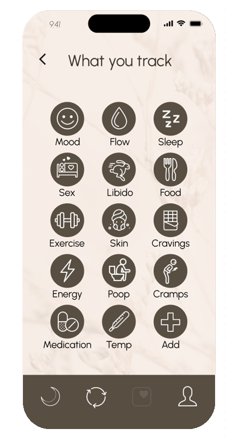
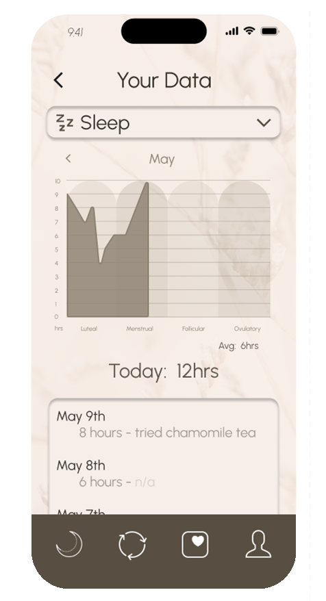
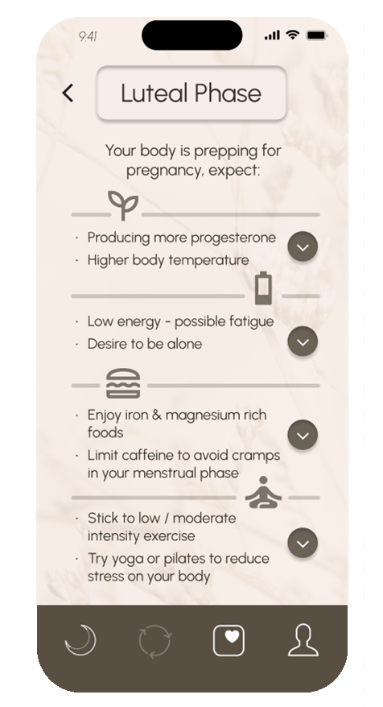

Revolutionize Your Rhythm
Let's work with our bodies instead of against them.
Revolution was designed with the female hormone cycle in mind.
As our hormones change in phases, so should the way we live.
Take control of your body's rhythms...

With Revolution, you can decode your hormonal cycle and learn to work in harmony with it, not against it. Gain insights into your body's unique patterns, track your symptoms, predict ovulation, and more. Our app is your window into the intricate dance of hormones that shapes your energy, mood, and wellbeing throughout your cycle. By understanding these shifts, you can leverage your hormonal strengths at different times in your cycle and better manage challenges. It's time to embrace the power of your cycle and have your personal Revolution.
Choose
Empowering you to tailor your tracking data to your personal symptom and experience to suit your unique needs and preferences
Track
Reveals transformative insights into your body's patterns, shedding light on the intricate workings of your personal health
Learn
Demystify your cycles by providing personalized insights and education tailored to your unique body
Know

Navigate life with a new understanding of your body to plan freely and confidently
Custom themes to match your vibe

Designed with you in mind, our platform is fully customizable, adaptable to your every mood and style. Whether you're feeling bold and vibrant, or calm and minimalistic, our app adjusts to mirror your vibe. Explore an array of colors, themes, icons, and more to create an environment that resonates with your preferences.
Something else about why people use it.

Join us in revolutionizing period and hormonal care for a staggering 1.8 billion people who menstruate each month worldwide. Our app is designed to transform the way individuals understand and manage their menstrual and hormonal health. By bridging the gap between you and your body, we aim to demystify the complex hormonal cycles, promoting a sense of empowerment, control, and wellbeing. It's time to turn the tide on traditional period care, replacing mystery and discomfort with knowledge and understanding.
Our period tracking app empowers you to understand and harmonize with your hormonal rhythms, enabling insightful symptom tracking, accurate ovulation prediction, and effective management of your unique cycle.